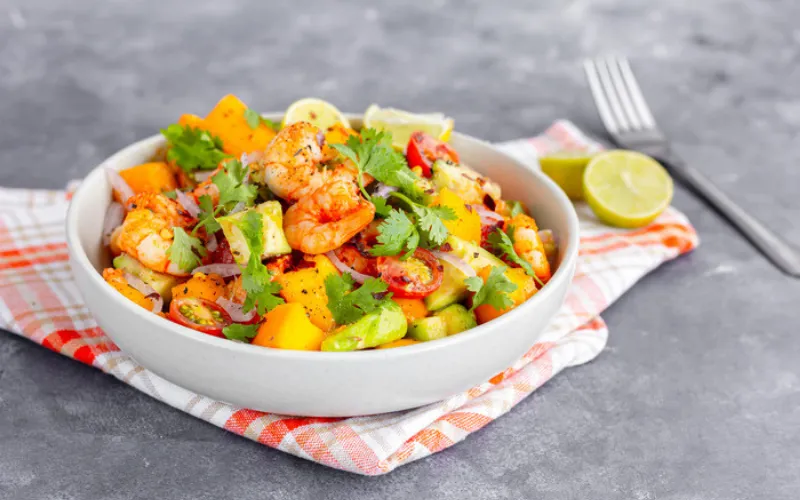
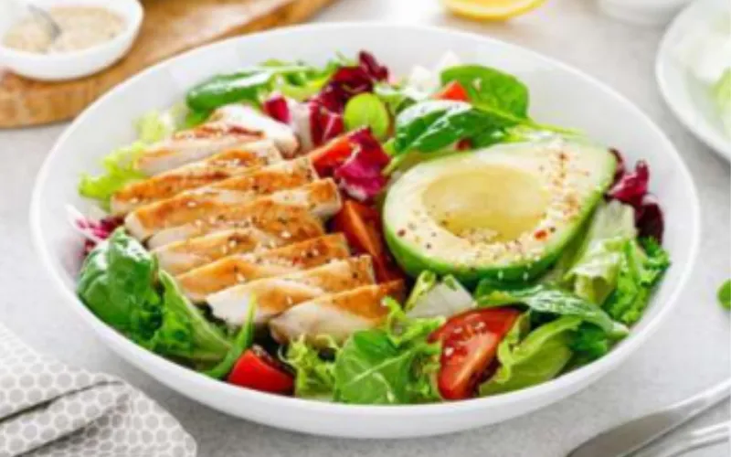
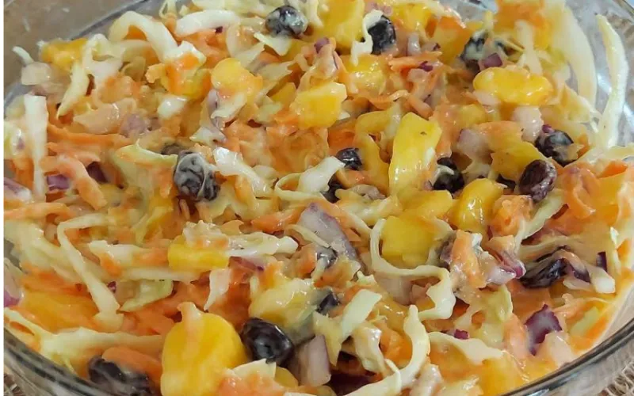
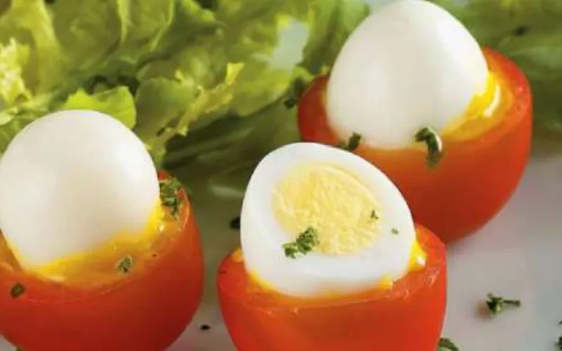
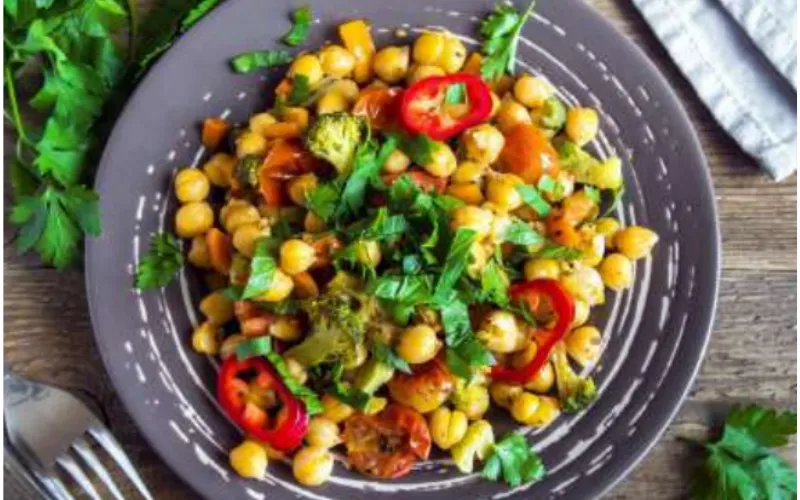

Ensalada Verano
Camarón, mango y aguacate

Ensalada Detox
Pollo, pepino y aguacate

Ensalada Primavera
Col, zanahoria y atún

Ensalada Italiana
Calabacita y codorniz

Ensalada de Garbanzo
Garbanzo, brócoli y nueces